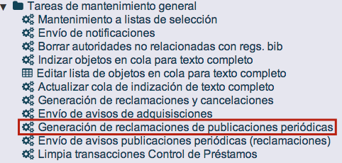
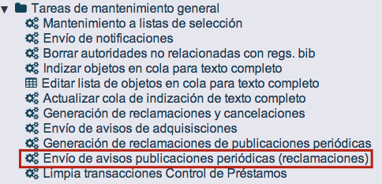
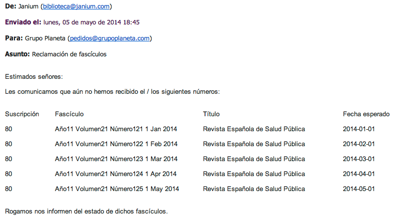
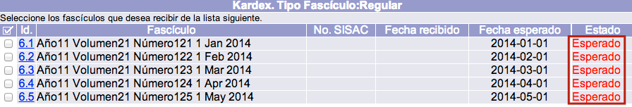

Cuando, por alguna circunstancia, uno o más fascículos no llegan en las fechas en que se esperan, el sistema Janium está preparado para generar las reclamaciones correspondientes de forma automática. Estas reclamaciones se crean tomando como referencia el campo Fecha esperado de cada fascículo y el valor del campo No. de días para reclamar de la suscripción (esta opción ha sido explicada en la sección Edición de suscripciones).
Un aspecto que es necesario tener en cuenta es que, si un fascículo no ha sido predicho, no puede ser reclamado.
En cuanto al procedimiento que se sigue, desde el módulo de Administración, el operador debe ejecutar la función de Generación de reclamaciones de publicaciones periódicas. A continuación, debe hacer lo mismo con la función de Envío de avisos de publicaciones periódicas (reclamaciones). Con estas acciones, el sistema crea y envía correos electrónicos con los avisos a las direcciones asociadas a los proveedores.


NOTA IMPORTANTE: en el caso de que los números que se deseen reclamar tengan fechas de esperado superiores (en número de días) al valor que conste para el proveedor en el campo Período de cancelación en días, dentro del módulo de Adquisiciones, estos fascículos se establecerán como anulados y no se enviarán reclamaciones.
Esto ocurriría, por ejemplo, con un fascículo que tuviera como fecha de esperado 10 – 06 – 2014 y en el registro del proveedor, 3 días asignados como período de cancelación. De esta forma, al ejecutar la función de generación de reclamaciones con fecha 15 – 06 – 2014, el número no va a ser reclamado al haber transcurrido ya más de 3 días sino que queda como Anulado. Para que la reclamación sea enviada, debería ejecutarse el programa el 11, 12 o 13 de junio.
Formato de reclamaciones
Los mensajes de correo electrónico que son enviados a los proveedores pueden presentar el formato que se observa a continuación. No obstante, los textos del mensaje, el de inicio y el de final pueden ser modificados desde el módulo de Administración.

Por otro lado, volviendo al módulo de Publicaciones periódicas, en la lista de fascículos esperados, aquellos que han sido reclamados aparecen con estado Esperado en color rojo.

Además, al acceder a la sección Reclamaciones_PP es posible consultar la información detallada de cada una de ellas: suscripción, biblioteca, tipo de fascículo, proveedor, fecha de reclamación y fecha de respuesta. También es posible editar algunos de sus datos haciendo clic sobre el valor correspondiente de la columna Enlace.
{kind=link}
{kind=link}
Reclamaciones manuales
Además del método automático ya explicado, también es posible reclamar manualmente uno o más fascículos.
NOTA IMPORTANTE: si se reclaman de forma manual uno o varios números, en el momento de generar los avisos para los proveedores, el sistema también incluirá aquellos fascículos que aún no hayan llegado aunque el operador no los haya marcado manualmente para la reclamación.
El procedimiento a seguir es el siguiente:
- Seleccionar los fascículos a reclamar y elegir la razón de la reclamación en la lista desplegable correspondiente.

- Hacer clic en el botón Reclamar.

- El sistema presenta los fascículos reclamados, marcándolos con estado Esperado en color rojo.
Por otro lado, si alguno de los fascículos reclamados llega finalmente a la institución, basta con marcarlo y establecerlo como Recibido.